The visual collection
Alexandra
in view.
Follow stories of settlement, ownership, resistance, democracy, community care and everyday cultural life. Each image introduces a historical theme; its caption explains the context.
These twenty AI-generated images interpret Alexandra’s history through imagined people and scenes. Historical references support the captions; the pictures are not archival photographs.
A closer look.
20 images in this collection

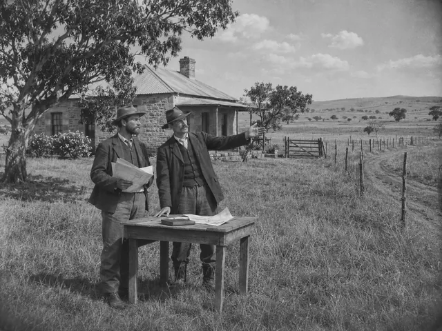
Beginnings and ownership
Land before the township
The City’s account dates the farm purchase to 1904 (City of Johannesburg, s.a.). This imagined land transaction introduces Alexandra’s farm origins; it does not establish a documented 1905 transaction (OpenAI, 2026).

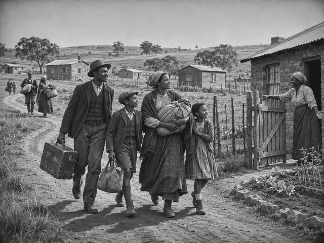
Beginnings and ownership
Arriving to build a home, 1912
Alexandra’s establishment in 1912 opened a new chapter of settlement (South African History Online, 2025). This imagined welcome expresses the hopes of arriving families; the people and houses are fictional (OpenAI, 2026).

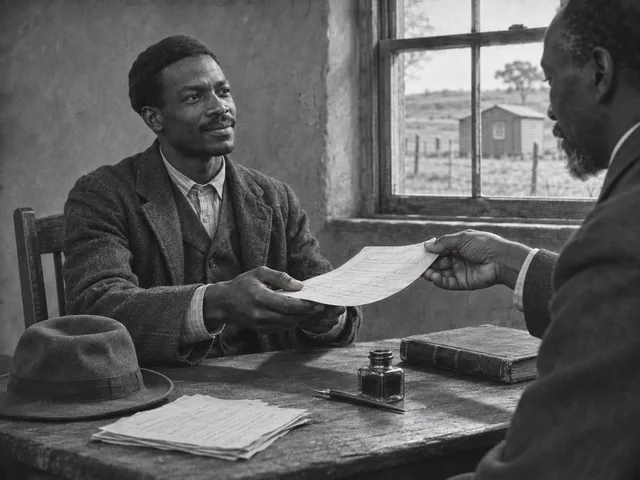
Beginnings and ownership
Ownership and belonging, 1912
Black freehold ownership forms an important part of Alexandra’s early history (City of Johannesburg, s.a.). The document exchange symbolises ownership and belonging; it is not a verified transaction or legal record (OpenAI, 2026).

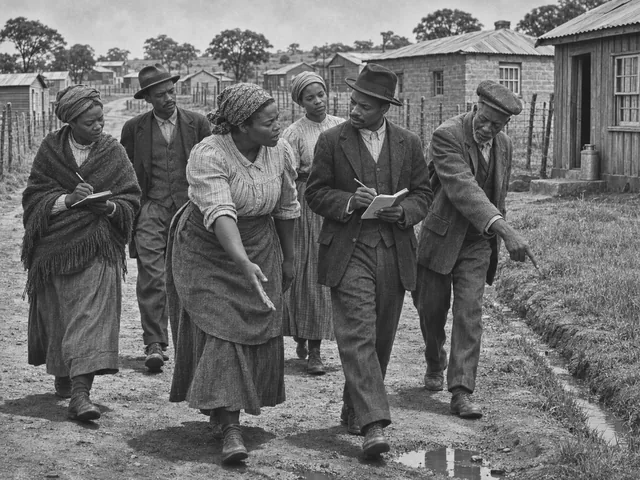
Community and displacement
A neighbourhood’s needs, early years
Limited municipal resources shaped Alexandra’s early development (City of Johannesburg, s.a.). This imagined inspection expresses residents’ concerns about roads, water and drainage; it does not document a meeting in 1916 (OpenAI, 2026).

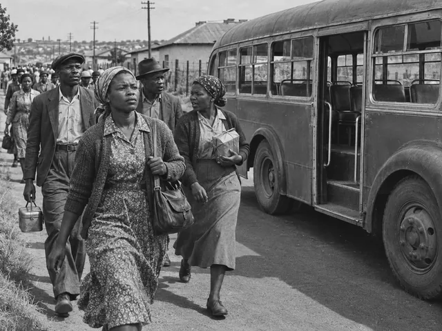
Education and resistance
Walking together, 1940
Residents used a bus boycott in 1940 to resist fare increases (South African History Online, 2025). These fictional commuters represent the collective choice to walk rather than ride (OpenAI, 2026).

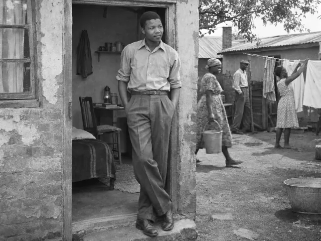
Beginnings and ownership
A room and a beginning, early 1940s
The Nelson Mandela Foundation dates Mandela’s arrival and Alexandra lodging to 1941 (Nelson Mandela Foundation, 2009). This imagined portrait recalls his early-1940s stay; the room, furnishings and neighbours are interpretive (OpenAI, 2026).

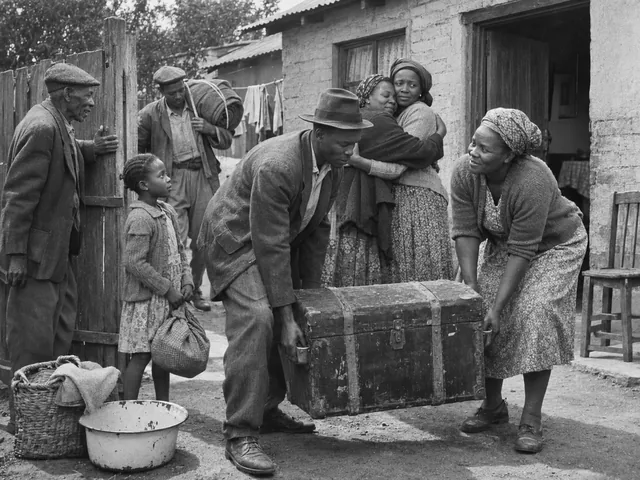
Community and displacement
Returning with what remains, mid-1940s
The City recounts mid-1940s removals to Orlando and residents’ return when housing was unavailable (City of Johannesburg, s.a.). This imagined reunion interprets displacement through neighbours’ practical support (OpenAI, 2026).

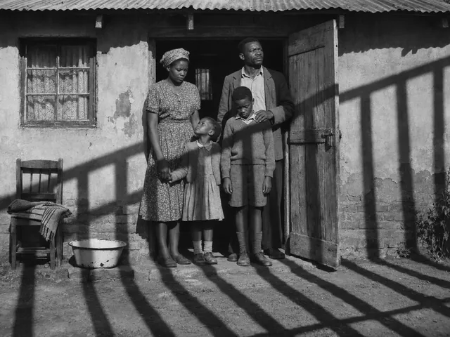
Community and displacement
A shadow across home, 1948
The National Party’s 1948 victory ushered in apartheid government (City of Johannesburg, s.a.). Bar-like shadows symbolise restrictions intruding on family life; they are a visual metaphor, not evidence of a prison or raid (OpenAI, 2026).

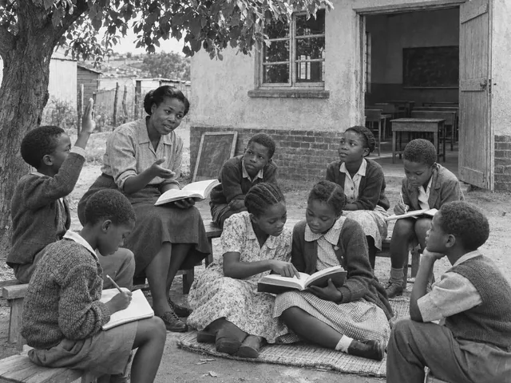
Education and resistance
Learning beyond the classroom, 1950
Cultural clubs offered alternative activities during resistance to Bantu Education. Levy recalls an Alexandra club in 1955 (Levy, 2026). This imagined outdoor lesson symbolises community commitment to learning (OpenAI, 2026).

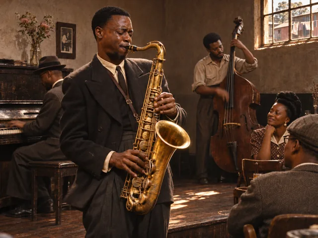
Music, livelihoods and sport
The sound of a neighbourhood, 1950
South African History Online traces musical life in Alexandra and the development of township jazz (South African History Online, 2026). This imagined performance evokes that cultural history; the musicians are fictional and no specific band or concert is depicted (OpenAI, 2026).

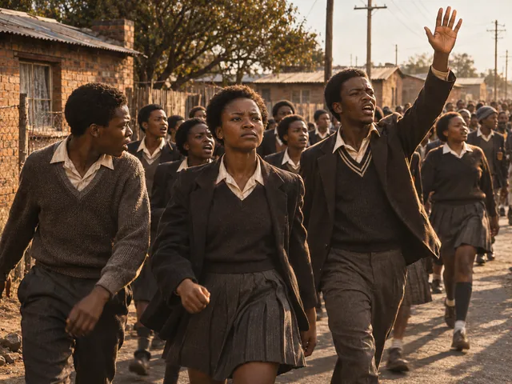
Education and resistance
Students finding their voice, June 1976
Alexandra students joined the wider mobilisation of June 1976 (Nieftagodien, 2019). This imagined procession represents youth solidarity; it records neither a specific march on 16 June nor identifiable participants (OpenAI, 2026).

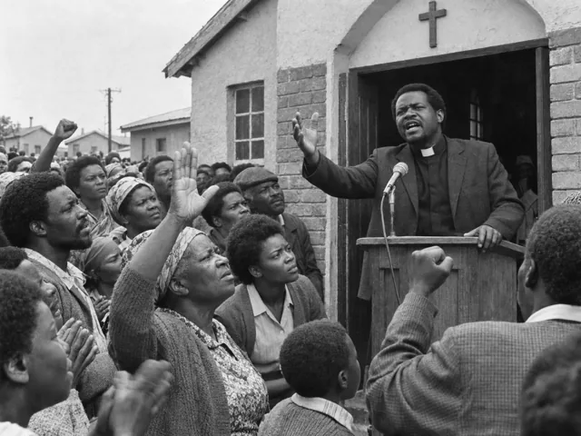
Education and resistance
Keeping a place called home, 1979
Reverend Sam Buti’s Save Alexandra campaign helped resist the township’s planned destruction, with success recalled in 1979 (Mokonyane, 2010). This fictional reverend symbolises community mobilisation; he is not an authenticated portrait of Buti (OpenAI, 2026).

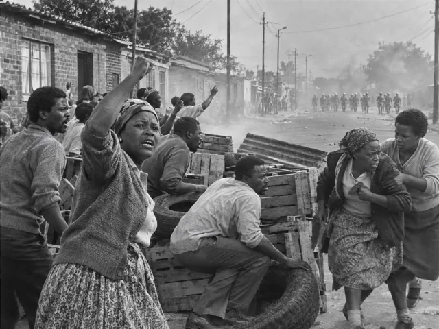
Education and resistance
A street in resistance, February 1986
TRC testimony describes Alexandra’s February 1986 uprising and confrontation with state forces (Lekalakala, 1996). This imagined barricade scene interprets collective resistance, without documenting a particular clash or establishing a casualty count (OpenAI, 2026).

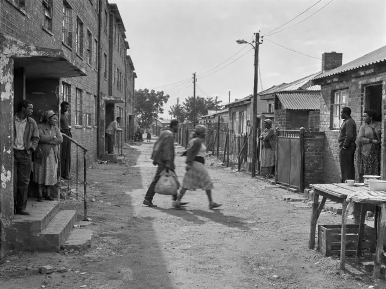
Community and displacement
A neighbourhood divided, 1991–1992
Human Rights Watch records severe hostel-related violence and displacement in Alexandra in 1992 (Human Rights Watch, 1993). This imagined street represents separation and uncertainty; its buildings and residents do not identify a specific incident or assign collective blame (OpenAI, 2026).

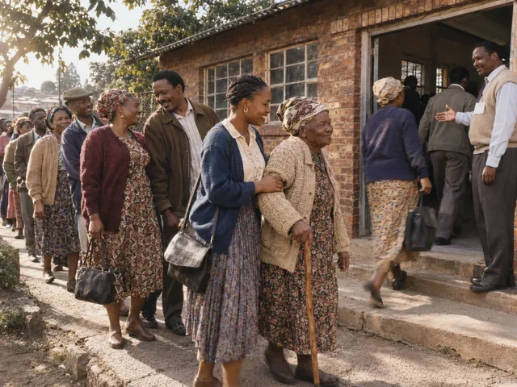
Democracy, renewal and care
Waiting to vote, April 1994
South Africa’s first democratic national elections took place in April 1994 (South African Government, 2020). This imagined Alexandra voting queue celebrates participation across generations; it does not document a named polling station or identify actual voters (OpenAI, 2026).

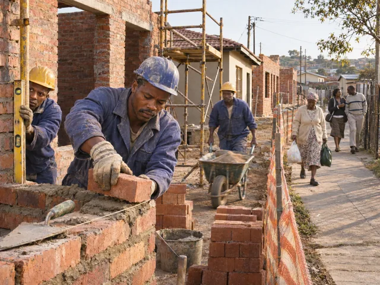
Democracy, renewal and care
Building towards better housing, 2001
Launched in 2001, the Alexandra Renewal Project aimed to improve housing and infrastructure (Johannesburg Development Agency, 2014). This imagined worksite illustrates those aims, rather than proving completion; the JDA also acknowledges continuing challenges (OpenAI, 2026).

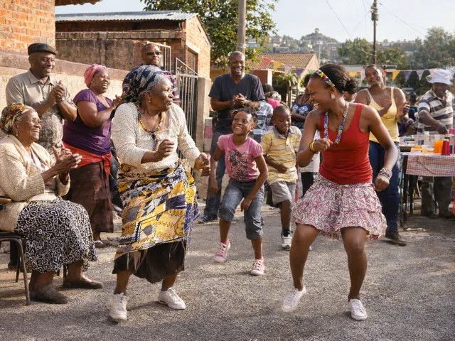
Democracy, renewal and care
A century shared in celebration, 2012
Alexandra marked its centenary in 2012 with public celebrations and reflection on its history (Johannesburg Development Agency, 2012). This imagined street festival expresses intergenerational pride; it is not a photograph of a documented centenary event (OpenAI, 2026).

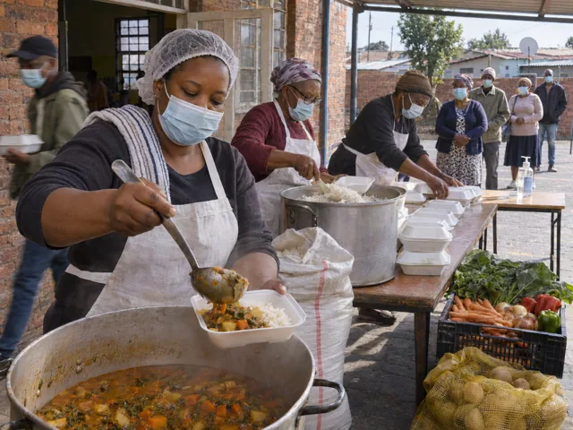
Democracy, renewal and care
Neighbours nourishing neighbours, 2020
Rays of Hope reported food-relief work with Alexandra partners during the 2020 lockdown (Peppler, 2020). This imagined kitchen symbolises community support; it does not depict that organisation’s premises, volunteers or a verified meal distribution (OpenAI, 2026).

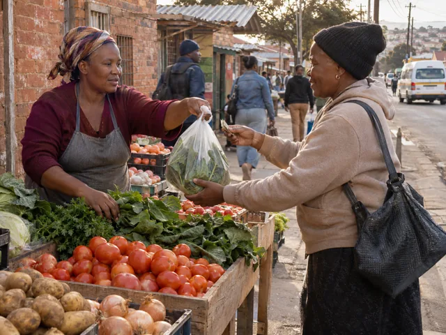
Music, livelihoods and sport
Livelihoods across a market stall
Research on Alexandra’s township economy examines informal trading as a livelihood and the challenges traders face (Masuku, 2023). This fictional vegetable-stall exchange represents everyday work and community connections, not an identified business (OpenAI, 2026).

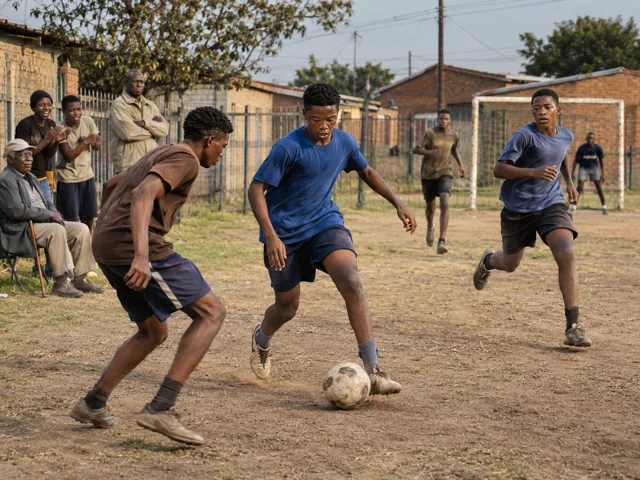
Music, livelihoods and sport
Football and shared momentum
Joburg Tourism identifies Alexandra Stadium as a venue supporting local football (Joburg Tourism Company, s.a.). This imagined neighbourhood match celebrates that broader sporting theme; it does not depict the stadium, an actual club or a documented fixture (OpenAI, 2026).
No matching images.
Try a different word, another theme or clear your search and filters.
Images carry meaning
Look at the image.
Read its context.
An illustration can express an idea without recording an event. Captions explain what is known about each image and where information remains incomplete.
Help grow the visual record.
Have a photograph connected to Alexandra? Tell us what it shows, when it was made and who created it. Permission and source checks are needed before any contribution can be published.
Enquire about an image contribution ↗ Return to the archive directory ↗Historical context and image credits
Behind the images.
Each historical statement has its own source citation. The imagined scene has a separate artwork credit. References use author and year without suffix letters; image titles identify the individual works.
Historical context references
-
City of Johannesburg, s.a. Why Alexandra survived apartheid. [online] Available at:
<https://joburg.org.z
a/play_/Pages/Play%2 0in%20Joburg/Culture %20and%20Heritage/Li nks/Why-Alexandra-su rvived-apartheid.asp x> [Accessed 9 November 2026]. -
South African History Online, 2025. Alexandra, Township in Johannesburg. Updated 29
April 2025. [online] Available at: <https://sahistory.or
g.za/place/alexandra -township-johannesbu rg> [Accessed 9 November 2026]. -
Nieftagodien, N., 2019. Soweto forty years on: The Black student rebellion of 1976.
Originally published 18 June 2016; archive updated 11 June 2019. [online] Available
at: <https://sahistory.or
g.za/archive/soweto- forty-years-black-st udent-rebellion-1976 -professor-noor-nief tagodien> [Accessed 9 November 2026]. -
Levy, N., 2026. “Bantu Education or the Street”. Extract from The Final Prize, hosted
by South African History Online. Updated 20 July 2026. [online] Available at: <https://sahistory.or
g.za/article/bantu-e ducation-or-street-n orman-levy> [Accessed 9 November 2026]. -
Nieftagodien, N. and Bonner, P., 2009. Settling on Alexandra. In: Alexandra: A
History, pp. 17–40. Johannesburg: Wits University Press. Chapter summary. [online]
Available at: <https://www.cambridg
e.org/core/books/abs /alexandra/settling- on-alexandra/66BCFF3 DA6D5B60DE276A42A754 982A7> [Accessed 9 November 2026]. -
African National Congress, 1955. 44th National Conference: Report of the National
Executive Committee, 18 December 1955. Hosted by South African History Online.
[online] Available at: <https://sahistory.or
g.za/archive/44th-na tional-conference-re port-national-execut ive-committee-18-dec ember-1955> [Accessed 9 November 2026]. -
Nelson Mandela Foundation, 2009. Nelson Mandela visits his former lodging in
Alexandra. [online] Available at: <https://www.nelsonma
ndela.org/news/entry /nelson-mandela-visi ts-his-former-lodgin g-in-alexandra> [Accessed 9 November 2026]. -
Mokonyane, N., 2010. Address by Premier of Gauteng, Ms Nomvula Mokonyane, at the
funeral service of Reverend Sam Palo Buti in Alexandra. [online] Available at: <https://www.gov.za/n
ews/speeches/address -premier-gauteng-ms- nomvula-mokonyane-fu neral-service-revere nd-sam-palo-buti> [Accessed 9 November 2026]. -
Lekalakala, B., 1996. Submission to the Truth and Reconciliation Commission: Alexandra
hearing, 29 October 1996. [online] Available at: <https://www.justice.
gov.za/trc/hrvtrans/ alex/lekalaka.htm> [Accessed 9 November 2026]. -
Human Rights Watch, 1993. Half-Hearted Reform: The Official Response to the Rising
Tide of Violence. Appendix. [online] Available at: <https://www.hrw.org/
reports/1993/southaf rica/7.htm> [Accessed 9 November 2026]. -
South African Government, 2020. Freedom Day 2020. [online] Available at: <https://www.gov.za/F
reedomDay2020> [Accessed 9 November 2026]. -
Johannesburg Development Agency, 2014. Alexandra Renewal Project improving residents’
lives. [online] Available at: <https://www.jda.org.
za/alexandra-renewal -project-improving-r esidents-lives/> [Accessed 9 November 2026]. -
Johannesburg Development Agency, 2012. Celebrating 100 years of Alex. [online]
Available at: <https://www.jda.org.
za/celebrating-100-y ears-of-alex/> [Accessed 9 November 2026]. -
Peppler, T., 2020. THANK YOU for partnering with Rays of Hope! Project report, 8 July
2020. Rays of Hope Alexandra, hosted by GlobalGiving. [online] Available at: <https://training.glo
balgiving.org/microp rojects/hope4alex/re ports/> [Accessed 9 November 2026]. -
South African History Online, 2026. Music and culture as forms of resistance. Updated
20 July 2026. [online] Available at: <https://sahistory.or
g.za/article/music-a nd-culture-forms-res istance> [Accessed 9 November 2026]. -
Masuku, B., 2023. Questioning governance of urban informality: A study of township
economy in Alexandra, Johannesburg. Journal of Foresight and Thought Leadership, 2(1),
a20. doi:10.4102/joftl.v2i1.20. [online] Available at: <https://joftl.org/in
dex.php/joftl/articl e/view/20> [Accessed 9 November 2026]. -
Joburg Tourism Company, s.a. Alexandra Stadium. [online] Available at: <https://visit.joburg
/things-to-do/alexan dra-stadium/> [Accessed 9 November 2026]. -
The Presidency, 2012. Address by President Jacob Zuma at an event to mark the
centenary of Alexandra Township. 22 September. [online] Available at: <https://www.thepresi
dency.gov.za/address -president-jacob-zum a-event-mark-centena ry-alexandra-townshi p> [Accessed 25 October 2026]. -
Phahle, R., 2019. The 1957 Alexandra Bus Boycott and its unsung heroes. June. [online]
Available at: <https://sahistory.or
g.za/archive/1957-al exandra-bus-boycott- and-its-unsung-heroe s-roseinnes-phahle-j une-2019> [Accessed 25 October 2026]. -
Peter Rich Architects, 2018. Alexandra Heritage Centre. Dated project account.
[online] Available at: <https://www.peterric
harchitects.com/alex andra-heritage-centr e> [Accessed 9 November 2026].
Artwork reference list
- OpenAI, 2026. Land before the township. [AI-generated image, ChatGPT; prompted and selected by Mkateki Mashimbye] Available at: <images/gallery/selected-land-purchase.webp> [Project file supplied 9 November 2026].
- OpenAI, 2026. Arriving to build a home, 1912. [AI-generated image, ChatGPT; prompted and selected by Mkateki Mashimbye] Available at: <images/gallery/selected-community-beginnings.webp> [Project file supplied 9 November 2026].
- OpenAI, 2026. Ownership and belonging, 1912. [AI-generated image, ChatGPT; prompted and selected by Mkateki Mashimbye] Available at: <images/gallery/selected-freehold-ownership.webp> [Project file supplied 9 November 2026].
- OpenAI, 2026. A neighbourhood’s needs, early years. [AI-generated image, ChatGPT; prompted and selected by Mkateki Mashimbye] Available at: <images/gallery/selected-street-inspection.webp> [Project file supplied 9 November 2026].
- OpenAI, 2026. Walking together, 1940. [AI-generated image, ChatGPT; prompted and selected by Mkateki Mashimbye] Available at: <images/gallery/selected-bus-boycott.webp> [Project file supplied 9 November 2026].
- OpenAI, 2026. A room and a beginning, early 1940s. [AI-generated image, ChatGPT; prompted and selected by Mkateki Mashimbye] Available at: <images/gallery/alexandra-mandela-backyard-room-1940s.webp> [Project file supplied 9 November 2026].
- OpenAI, 2026. Returning with what remains, mid-1940s. [AI-generated image, ChatGPT; prompted and selected by Mkateki Mashimbye] Available at: <images/gallery/selected-families-returning.webp> [Project file supplied 9 November 2026].
- OpenAI, 2026. A shadow across home, 1948. [AI-generated image, ChatGPT; prompted and selected by Mkateki Mashimbye] Available at: <images/gallery/selected-apartheid-shadows.webp> [Project file supplied 9 November 2026].
- OpenAI, 2026. Learning beyond the classroom, 1950s. [AI-generated image, ChatGPT; prompted and selected by Mkateki Mashimbye] Available at: <images/gallery/selected-education-boycott.webp> [Project file supplied 9 November 2026].
- OpenAI, 2026. The sound of a neighbourhood, 1950s. [AI-generated image, ChatGPT; prompted and selected by Mkateki Mashimbye] Available at: <images/gallery/alexandra-neighbourhood-jazz-1950s.webp> [Project file supplied 9 November 2026].
- OpenAI, 2026. Students finding their voice, June 1976. [AI-generated image, ChatGPT; prompted and selected by Mkateki Mashimbye] Available at: <images/gallery/selected-student-march.webp> [Project file supplied 9 November 2026].
- OpenAI, 2026. Keeping a place called home, 1979. [AI-generated image, ChatGPT; prompted and selected by Mkateki Mashimbye] Available at: <images/gallery/alexandra-save-alex-community-rally-1979.webp> [Project file supplied 9 November 2026].
- OpenAI, 2026. A street in resistance, February 1986. [AI-generated image, ChatGPT; prompted and selected by Mkateki Mashimbye] Available at: <images/gallery/alexandra-six-days-war-street-1986.webp> [Project file supplied 9 November 2026].
- OpenAI, 2026. A neighbourhood divided, 1991–1992. [AI-generated image, ChatGPT; prompted and selected by Mkateki Mashimbye] Available at: <images/gallery/alexandra-hostels-family-homes-1990s.webp> [Project file supplied 9 November 2026].
- OpenAI, 2026. Waiting to vote, April 1994. [AI-generated image, ChatGPT; prompted and selected by Mkateki Mashimbye] Available at: <images/gallery/alexandra-democratic-election-queue-1994.webp> [Project file supplied 9 November 2026].
- OpenAI, 2026. Building towards better housing, 2001. [AI-generated image, ChatGPT; prompted and selected by Mkateki Mashimbye] Available at: <images/gallery/alexandra-renewal-housing-construction-2001.webp> [Project file supplied 9 November 2026].
- OpenAI, 2026. A century shared in celebration, 2012. [AI-generated image, ChatGPT; prompted and selected by Mkateki Mashimbye] Available at: <images/gallery/alexandra-centenary-street-celebration-2012.webp> [Project file supplied 9 November 2026].
- OpenAI, 2026. Neighbours nourishing neighbours, 2020. [AI-generated image, ChatGPT; prompted and selected by Mkateki Mashimbye] Available at: <images/gallery/alexandra-lockdown-community-kitchen-2020.webp> [Project file supplied 9 November 2026].
- OpenAI, 2026. Livelihoods across a market stall. [AI-generated image, ChatGPT; prompted and selected by Mkateki Mashimbye] Available at: <images/gallery/alexandra-street-trading-vegetables.webp> [Project file supplied 9 November 2026].
- OpenAI, 2026. Football and shared momentum. [AI-generated image, ChatGPT; prompted and selected by Mkateki Mashimbye] Available at: <images/gallery/alexandra-neighbourhood-football.webp> [Project file supplied 9 November 2026].
Code library reference
-
Biati Digital, 2025. GLightbox (Version 3.3.1). [Source code] Available at: <https://github.com/b
iati-digital/glightb ox/tree/v3.3.1> [Accessed 9 November 2026].